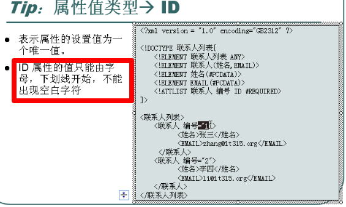

1.可作为单独文件写。也可在xml文档内部写
2.<!DOCTYPE 文档根节点 SYSTEM "name.dtd">
3.当引用的是一个公共的文件时，<!DOCTYPE 文档根节点 public "DTD名称" "DTD的url">
二、元素
4.<!ELEMENT 元素名称 元素类型>
<!ELEMENT bookshelf (book+ )>
元素类型：ANY ，可以放任何类型
<!ELEMENT book (name, author,price )>
| 不写默认都得出现，写这个可以选
<!ELEMENT name (#PCDATA)>
EMPTY 用于定义空元素
三、属性
5.xml文档中的标签属性需通过ATTLST为其设置属性
<!ATTLIST 元素名
属性名1 属性值设置 设置说明
属性名2 属性值设置 设置说明
······
>
例如：
<!ATTLIST 商品
类别 CDATA #REQUIRED
颜色 CDATA #IMPLIED
>
#REQUIRED 表示必须写的
#IMPLIED 可写可不写
对应的XML例子：
<商品 类别="服装" 颜色="黄色">···</商品>
<商品 类别="服装">···</商品>
除此之外还有其他的，如
#FIXED 为该属性取一个固定值，在XML文件中不能为该属性取其他值。但需要为该属性提供这个值。
直接使用默认值：在XML中可以设置该值也可以不设置。若没设置使用默认值
如：
<!ATTLIST 页面作者
网站职务 CDATA #FIXED "页面作者"
个人爱好 CDATA "上网"
>
网站职务，写也白写
ID属性：属性值以字母开头
